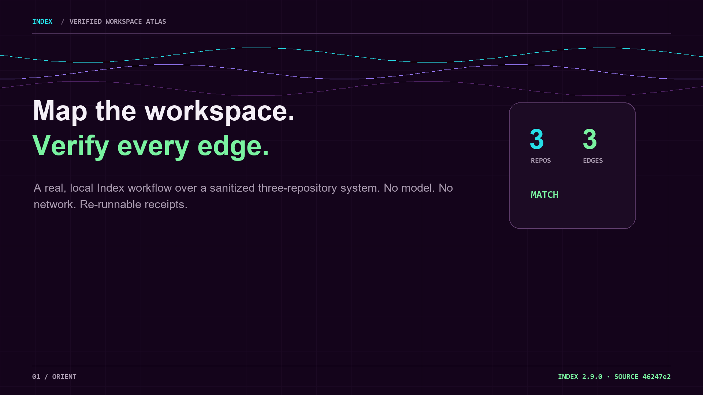
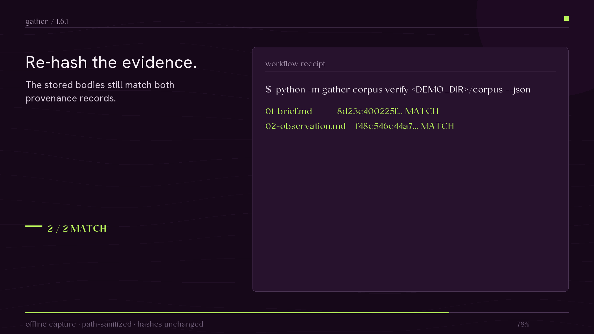
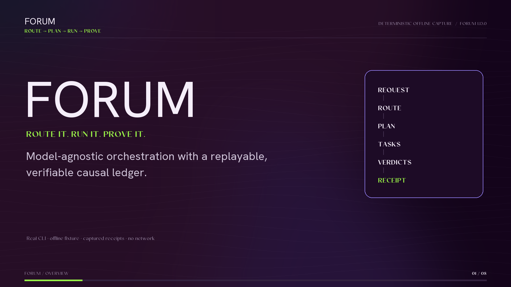
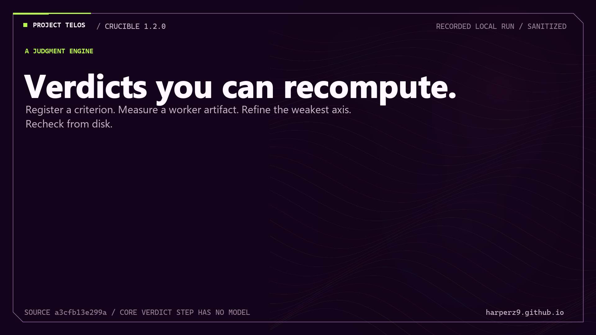

Watch the tools move.
Four current workflows, each shown twice: a short cut for orientation, then the full run with its transcript, machine-readable evidence, and reproduction notes.
Index · Gather · Forum · Crucible/silent, on-screen captions/local or disclosed offline fixtures
-

Workspace graph, named-edge check, bounded context, and offline atlas. Index
Index 2.9.0 · 30-second cut + 118-second run
Map a sanitized three-repository workspace, check one dependency back to file-and-line evidence, fit the relevant system into a token budget, and render an offline atlas.
- 3 repositories
- 3 evidenced edges
- no model
- no network
-

Structured intake, content-addressed storage, recall, verification, and a changed-receipt check. Gather
Gather 1.6.1 · 29-second cut + full run
Extract structured source blocks, retain the useful records in a local corpus, verify both stored bodies against their provenance, then show the changed-receipt path.
- 7 blocks extracted
- 2 records stored
- 2 / 2 match
- tamper caught
-

Dependency-aware routing, validated waves, checkpoints, payload handoffs, and causal ledger. Forum
Forum 1.13.0 · 27-second cut + full run
Turn one cross-domain request into three dependent task waves, validate each result, preserve the payload handoffs, and re-check the resulting ledger.
- 3 dependency waves
- 3 validator passes
- 3 checkpoints
- 19 ledger entries
-

Fixed thesis, measured draft, targeted refinement, cleanroom review, and disk re-check. Crucible
Crucible 1.2.0 · 30-second cut + 94-second run
Measure a three-claim release brief, name the two concrete drifts, refine the artifact without moving the criterion, and re-derive the final verdict from disk.
- 3 claims measured
- 1 match / 2 drift
- 3 match / 0 drift
- 2 reviews pass
What these recordings establish
They show the named tool paths running over small, inspectable fixtures and preserve the artifacts needed to check what appears on screen. They are not broad product benchmarks, scale tests, or evidence that every input shape is covered.
Recorded and checked 2026-07-12. Each workflow page states its own fixture, runtime, evidence package, and narrower claim boundary.